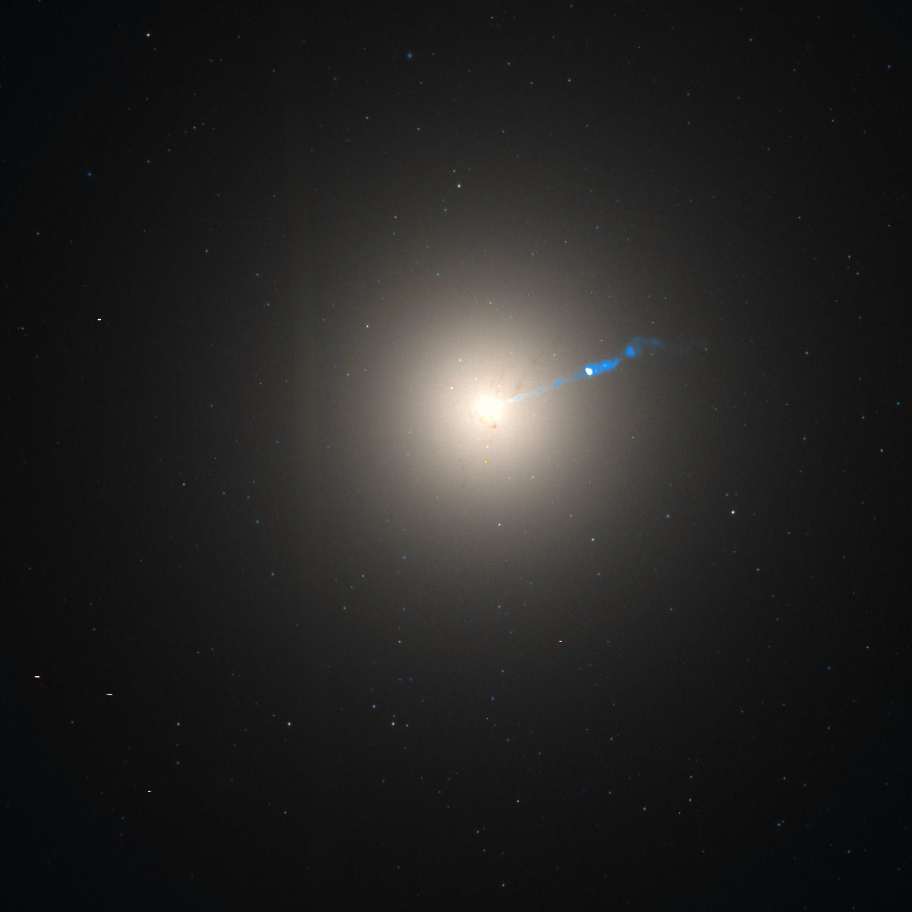
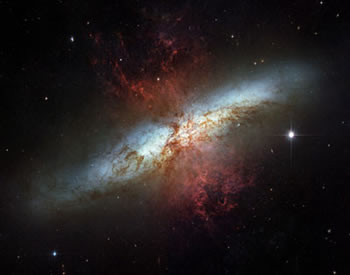

Las galaxias son vastas agrupaciones de estrellas, gas, polvo y materia oscura que
se mantienen unidas por la
gravedad. Son los componentes básicos del universo a gran escala y vienen en una variedad de formas y
tamaños.
Aquí tienes información general sobre las galaxias:
Hay varios tipos principales de galaxias:
Galaxias elípticas: Tienen una forma redondeada o elíptica y carecen de
estructura de brazos espirales. Están compuestas principalmente por estrellas viejas y tienen menos
formación estelar activa.

Galaxias espirales: Tienen brazos espirales bien definidos y a menudo una
región central llamada bulbo.
Contienen estrellas jóvenes y viejas, así como regiones de formación estelar activa.
Galaxias irregulares: Carecen de una forma distintiva y pueden tener una
mezcla de estrellas jóvenes y viejas.
Suelen presentar una alta tasa de formación estelar y estructuras caóticas.

Galaxias lenticulares: Tienen una forma similar a las elípticas pero con
una pequeña estructura de disco. Contienen tanto estrellas jóvenes como viejas.
Vía Láctea: Nuestra propia galaxia, la Vía Láctea, es una galaxia espiral.
Contiene alrededor de 100-400 mil millones de estrellas y es el hogar de nuestro sistema solar.
Consiste en una gigantesca agrupación de estrellas, planetas y nubes de gas con forma de espiral
barrada y un diámetro medio de alrededor de 200.000 años luz.